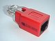

PC-Direktverbindung per Netzwerk-Kabel
Dieser Artikel wurde für die folgenden Ubuntu-Versionen getestet:
Ubuntu 16.04 Xenial Xerus
Ubuntu 14.04 Trusty Tahr
Zum Verständnis dieses Artikels sind folgende Seiten hilfreich:
 Mit Hilfe einer direkten Kabelnetzwerk-Verbindung zweier Rechner lassen sich Daten schnell austauschen, z.B. zwischen Desktop und Notebook. Dies ist besonders praktisch, wenn kein Router vorhanden ist oder wenn keine WLAN-Verbindung aufgebaut werden kann. Eine solche Direktverbindung lässt sich unkompliziert einrichten, ohne Änderungen in Konfigurationsdateien von Hand vornehmen zu müssen. Im Idealfall brauchen auch keine statischen IP-Adressen (von Hand) vergeben werden.
Mit Hilfe einer direkten Kabelnetzwerk-Verbindung zweier Rechner lassen sich Daten schnell austauschen, z.B. zwischen Desktop und Notebook. Dies ist besonders praktisch, wenn kein Router vorhanden ist oder wenn keine WLAN-Verbindung aufgebaut werden kann. Eine solche Direktverbindung lässt sich unkompliziert einrichten, ohne Änderungen in Konfigurationsdateien von Hand vornehmen zu müssen. Im Idealfall brauchen auch keine statischen IP-Adressen (von Hand) vergeben werden.
Bei bestehender Verbindung können die beiden Rechner dank Avahi nicht nur über ihre IP-Adressen, sondern auch bequem über Rechnername.local angesprochen werden. Haben die Rechner z.B. die Namen "Desktop" und "Notebook", können sie jeweils mit Desktop.local und Notebook.local angesprochen werden.
Statt einer Kabelverbindung kann man auch WLAN nutzen: PC-Direktverbindung per WLAN.
Voraussetzungen¶
 In der Vergangenheit war ein CrossOver-Kabel zwingende Voraussetzung zur direkten Verbindung zweier Rechner. Statt des sonst selten benötigten Spezial-Kabels kann man auch ein normales Patchkabel mit einem CrossOver-Adapter (siehe Abbildung) verwenden.
Wenn allerdings einer der beiden Rechner mit einer Gigabit-fähigen Netzwerkkarte ausgestattet ist, reicht ein normales Patchkabel (ohne Adapter) ebenfalls aus. Um die Frage zu klären, ob die eigene Netzwerkkarte geeignet ist, kann folgender Befehl helfen [1]:
lspci -nnk | grep -i net -A2
Enthält die Ausgabe den Begriff Fast Ethernet, dann handelt es sich nicht um eine Gigabit-fähige Netzwerkkarte. Manche dieser Netzwerkkarten können trotzdem ohne ein spezielles CrossOver-Kabel verwendet werden. Ob das für die eigenen Netzwerkkarten zutrifft, wird weiter unten näher erläutert.
Konfiguration¶
im NetworkManager eine neue kabelgebundene Verbindung hinzufügen, z.B. "Direktverbindung"
unter dem Reiter "IPv4-Einstellungen" die Methode "nur Link-Local" auswählen
die selben Einstellungen auf dem zweiten Rechner vornehmen
Rechner per Kabel (siehe oben) verbinden und auf beiden Rechnern "Direktverbindung" im NetworkManager auswählen
Keine Verbindung¶
Scheitert der Verbindungsaufbau mit den genannten Einstellungen, bearbeitet man die "Direktverbindung". Statt der Methode "nur Link-Local" wählt man "Manuell" aus und vergibt zwei IP-Adressen aus einem privaten Adressbereich. Beispiel:
| Manuelle Konfiguration der IP-Adressen | ||
| Rechner | IP-Adresse | Netzwerkmaske (netmask) |
| Desktop | 10.0.1.1 | 255.255.255.0 |
| Notebook | 10.0.1.2 | 255.255.255.0 |
Test¶
Normalerweise erhält man vom NetworkManager eine Rückmeldung zum Verbindungsaufbau. Um die Verbindung praktisch zu testen, kann der Befehl ping genutzt werden. Der Test erfolgt hier vom Desktop zum Notebook [1]:
ping -c 3 Notebook.local
oder unter Verwendung der IP-Adresse:
ping -c 3 10.0.1.2
Eine erfolgreiche Verbindung sieht z.B. so aus:
PING Notebook.local (169.254.6.130) 56(84) bytes of data. 64 bytes from notebook.local (169.254.6.130): icmp_seq=1 ttl=64 time=0.324 ms 64 bytes from notebook.local (169.254.6.130): icmp_seq=2 ttl=64 time=0.337 ms 64 bytes from notebook.local (169.254.6.130): icmp_seq=3 ttl=64 time=0.336 ms
Sicherheitshalber sollte der Test auch in umgekehrter Richtung, also in diesem Beispiel vom Notebook zum Desktop, durchgeführt werden.
Eine erfolglose Verbindung sieht dagegen so aus:
PING 10.0.1.2 (10.0.1.2) 56(84) bytes of data. --- 10.0.1.2 ping statistics --- 3 packets transmitted, 0 received, 100% packet loss, time 1999ms
Verwendung¶
Wenn die Netzwerkverbindung vorhanden ist, kann man sich nun praktischen Dingen zuwenden. In der Regel wird der Austausch von Dateien gewünscht sein. Dieser ist auf vielfältige Art und Weise möglich. So kann man beispielsweise mit net_usershare Freigaben einrichten, die mit den meisten Dateimanagern genutzt werden können. Allerdings müssen Installation und Einrichtung vorab erfolgen. Ohne Vorbereitung nutzbar ist ein temporärer Webserver mit Python. Weitere Anregungen geben die unter Links genannten Artikel.
Problembehebung¶
MDI-X¶
Bei einigen Fast-Ethernet Karten, die eine automatische Erkennung und Umschaltung der Verbindung durch MDI-X unterstützen, kann ebenfalls ein normales Patchkabel verwendet werden. Um eine Verbindung herstellen zu können, genügt eine Ethernet-Karte im Verbund, die diese Funktion unterstützt.
Ob die verwendete Karte diese Voraussetzung erfüllt, kann mit ethtool überprüft werden. Das Programm muss aus den offiziellen Paketquellen nachinstalliert werden.
ethtool
 mit apturl
mit apturl
Paketliste zum Kopieren:
sudo apt-get install ethtool
sudo aptitude install ethtool
Für die Schnittstelle eth0 liefert der folgende Aufruf von ethtool die notwendigen Informationen.
sudo ethtool eth0
Gegebenenfalls muss die Schnittstelle noch angepasst werden. Wie man die richtige Schnittstelle finden kann, wird im Artikel IP-Adresse wechseln erklärt. Die Ausgabe sieht dann etwa so aus (gekürzt):
Settings for eth0: Supported ports: [ TP ] Supported link modes: 10baseT/Half 10baseT/Full 100baseT/Half 100baseT/Full ... Auto-negotiation: on MDI-X: off Supports Wake-on: pumbag ...
Sobald ein Eintrag für "MDI-X" vorhanden ist (der nicht zwangsläufig auf "on" stehen muss), unterstützt die Karte prinzipiell eine direkte Verbindung ohne CrossOver-Kabel.
Links¶
Ethernet-Crossover-Verbindung ohne Netzwerkmanager - für Spezialfälle wie z.B. IP-Kameras
PC-Direktverbindung per WLAN - wie oben, aber via WLAN
Heimnetzwerk - Datenaustausch im lokalen Netzwerk (LAN)
Instant Webserver - einen Browser für Up- und Downloads verwenden
rsync - Daten abgleichen (siehe auch Datensicherung)
Internetverbindungsfreigabe - Konfigurationsmöglichkeiten zur gemeinsamen Nutzung des Internetzugangs
Skript zur einfachen automatischen Vernetzung zwischen Ubuntu-Linux und Windows-Systemen
- Erstellt mit Inyoka
-
 2004 – 2017 ubuntuusers.de • Einige Rechte vorbehalten
2004 – 2017 ubuntuusers.de • Einige Rechte vorbehalten
Lizenz • Kontakt • Datenschutz • Impressum • Serverstatus -
Serverhousing gespendet von